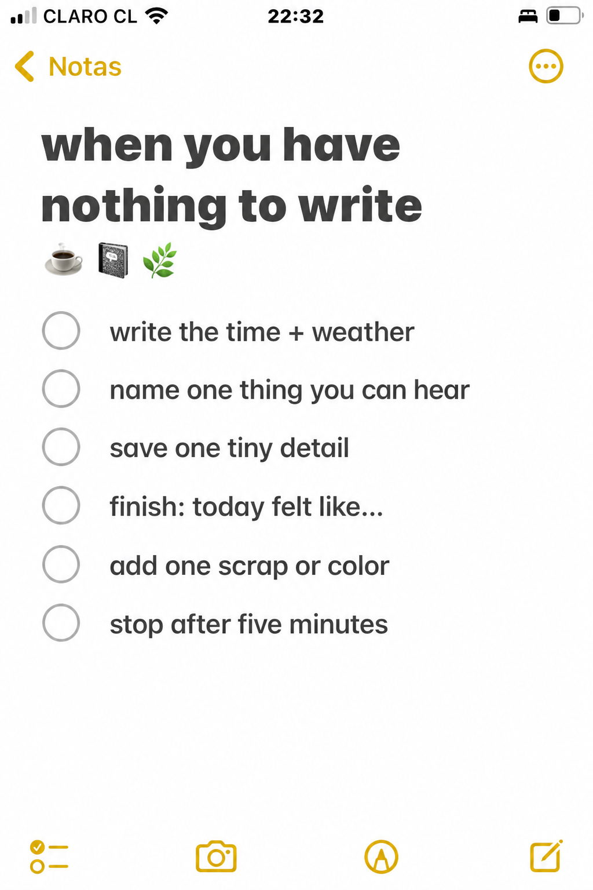
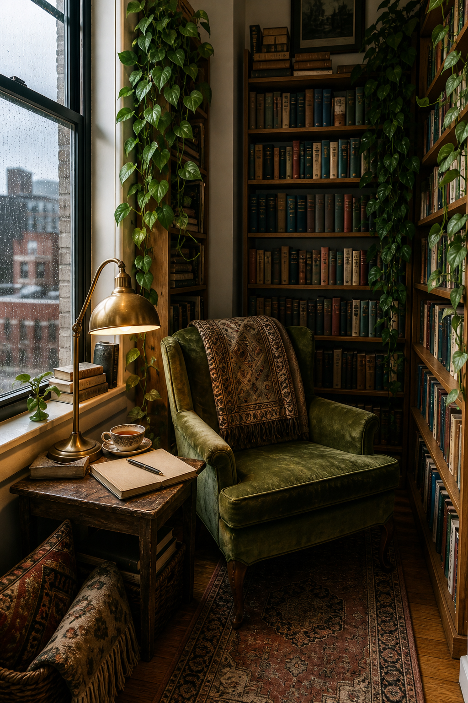

Sometimes the problem is not a lack of journal prompts. It is that every prompt feels like another task. On those days, make the page smaller than your resistance. Five minutes is enough to notice one ordinary moment and leave a trace of it behind.

Prepare a tiny landing place
Open to half a page rather than a full spread. Put one pen beside it and set a timer for five minutes. Do not gather stickers, search for a quotation, or choose a theme first. The ritual works because the decision-making has already been removed.
Begin by writing the time and weather. These facts may seem unimportant, but they place the page inside a real day. “8:20, warm kitchen, rain beginning” is already enough to create a scene without asking you to explain how you feel.

Borrow from your senses
Choose one thing you can hear. It might be the kettle clicking off, traffic on wet pavement, someone moving in the next room, or the hum of a fan. Write it exactly as you notice it. You are collecting evidence, not trying to turn it into literature.
Then save one tiny visible detail: a chip in the cup, a green reflection on the wall, the receipt still folded in your pocket. Specific details make a short entry feel alive. “I had a quiet day” is vague. “The blue receipt ink stained my thumb” belongs only to this particular afternoon.
Finish one soft sentence
Complete the line “Today felt like…” without searching for the perfect description. It can be plain, contradictory, or unfinished: a room before visitors arrive, three errands tied together, a slow song in another apartment. If no metaphor appears, write a color, temperature, or texture instead.
This is not a gratitude exercise unless gratitude is genuinely present. A five-minute page can hold boredom, relief, irritation, or nothing more dramatic than tiredness. Honest small entries are easier to return to than forced positive ones.
Add one physical clue
If you enjoy visual journaling, attach one scrap or add one color after the writing is finished. Choose something already within reach: the edge of a receipt, tea packaging, a torn envelope, a pressed leaf, or a pencil block that matches the light outside. One clue is enough. The object should support the memory rather than become a new craft project.
For a gentle printable option, select one small botanical from the 100 free floral pictures. Crop it tightly and use only a fragment near the date or final sentence. Keeping it small preserves the unfinished, everyday character of the page.
Stop when the timer rings
The stopping point matters as much as the prompt. Do not use the remaining energy to decorate the whole spread. Close the notebook while the ritual still feels easy. You are teaching yourself that opening the journal does not require a perfect idea or an hour of concentration.
On another blank day, repeat the same sequence: time and weather, one sound, one detail, one soft sentence, one scrap or color. The pages will vary because your life varies. The structure can stay reassuringly the same.
A journal does not need a meaningful entry every time it opens. Sometimes its job is simply to prove that this small day existed. Find more gentle ways to begin in the Sentimentalica journal.